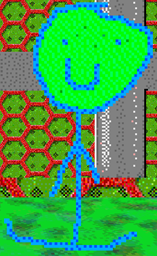

"Stick Plush" is the Globe and Banana replacements in the "ThatCoolModderGuys Basics in Mods and Edits!"(/"TCMG").
Aliases
Stick Plush, SP, Stickman Plushie.
Appearance
Stick Plush appears as a poorly drawn blue stick man. He has short arms, long-ish legs, and a large head with a small smiley face. His face is green.
Gallery

Trivia
- Stick Plushies enjoy watching over the School/House.
- It's unknown where the Stick Plushies come from.
- The Stick Plushies are alive despite being called Plushies.
Return to Main Page